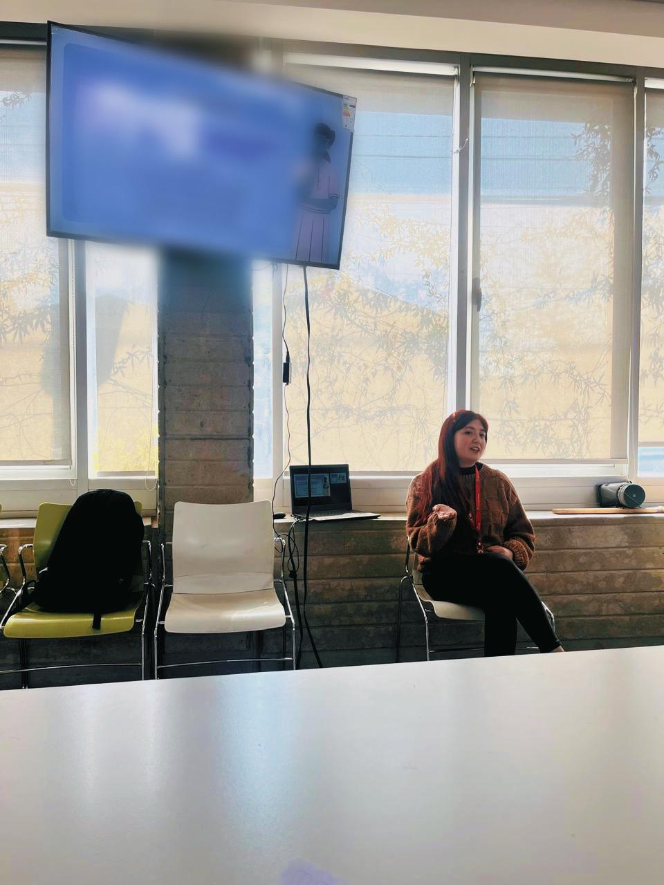
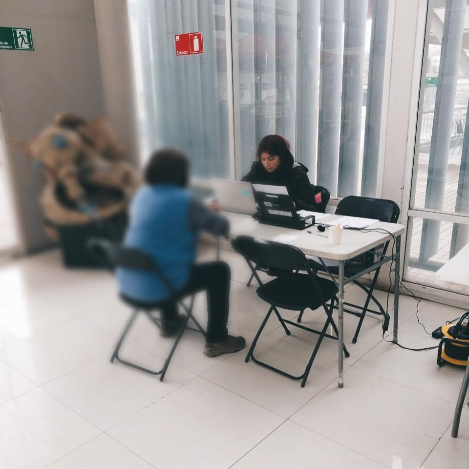

¡CONOCEME!
Mi nombre es Romina Arriaza, Licenciada en Trabajadora Social con Mención en Gestión de Políticas Públicas egresada de la Universidad Autónoma de Chile. Soy madre, mujer trabajadora y aprendiz innata con una tremenda motivación de ser agente de cambio.
Cuento con un amplio conocimiento en elaboración de informes sociales, elaboración de proyectos, postulación a convocatorias e intervenciones de casos y su respectivo seguimiento.
ADEMAS...
Trabajo con un enfoque crítico e inclusivo, que se adapta a los requerimientos de la persona usuaria, convirtiéndola en un sujeto de cambio de su propia realidad.
Por otra parte, dispongo de múltiples conocimientos en relación a la discapacidad e inclusión; salud mental y familia, lo que favorece considerablemente el foco al momento de elaborar la respectiva intervención o informe social.
